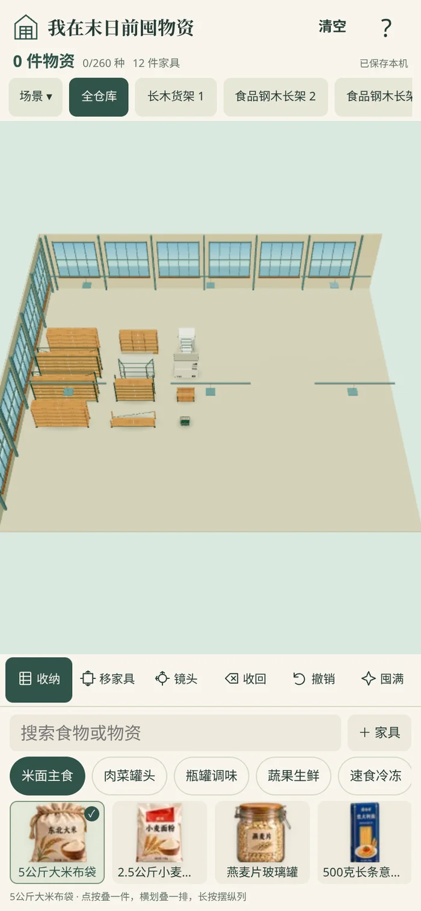

第四场景 · 半屏空仓
打开游戏 下载新版小红书ZIP 校验摘要
下面是新用户首次进入的实际运行截图。已有存档保留原进度；可用无痕窗口查看首次进入效果。

- 新用户默认第四个场景「海边物资站」，白天浅色仓库。
- 首次进入0件物资，所有货架、柜子、冰箱和箱子均为空。
- 初始12件常用家具分三列紧凑排列在左半边，右半边留空；仍可自由新增、移动、转向家具。
- 全仓库镜头正面俯视，避免初始布局斜向挤占右侧空间。
- 右上角垃圾桶图标改为「清空」文字；清空确认与撤销功能保留。
- 初始布局自动保存；已有玩家库存、堆叠、位置和场景不因本次默认值调整而重置。
测试记录